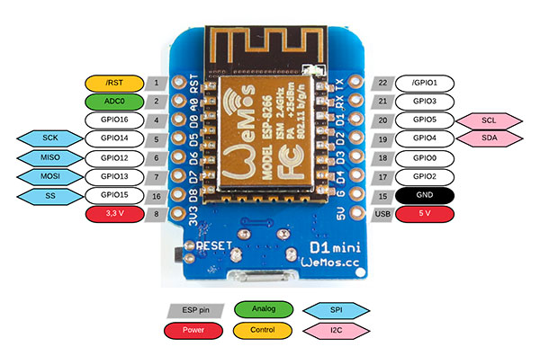
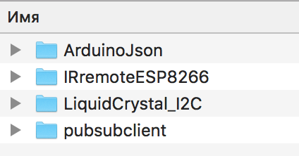
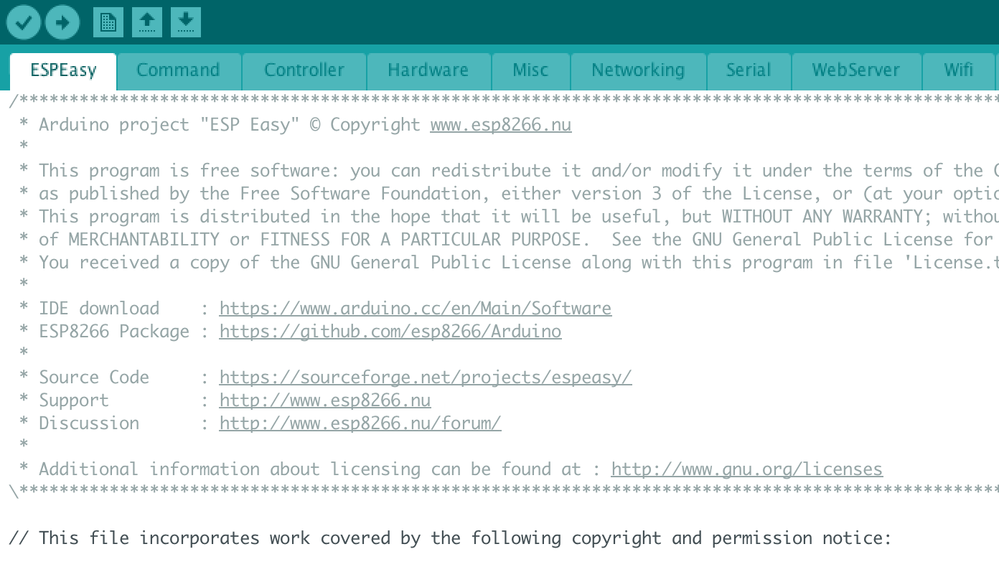
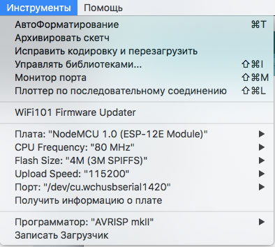
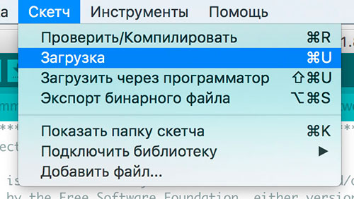
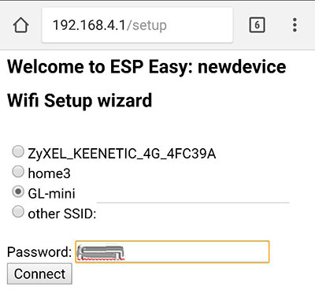
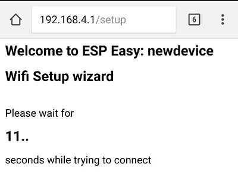
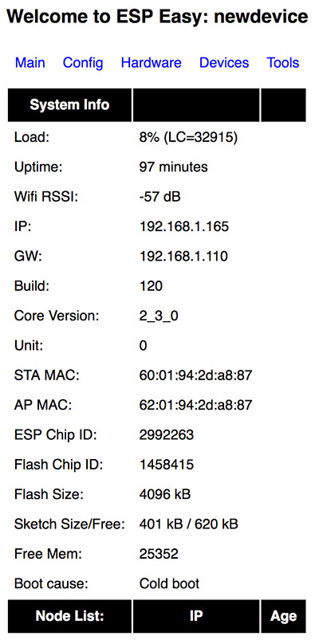
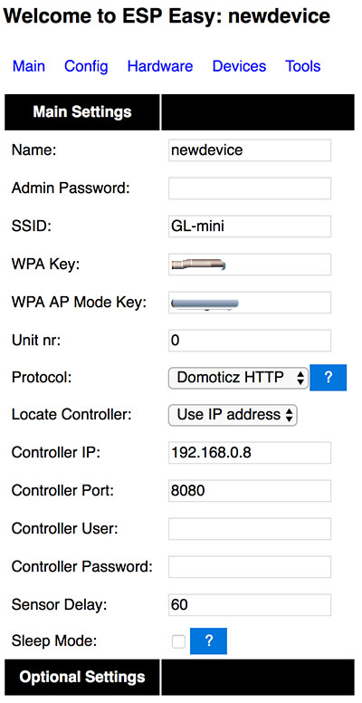

Готовая прошивка "ESP Easy" позволит легко превратить любой модуль на базе ESP в многофункциональный сенсор или модуль для умного дома под управлением таких систем, как OpenHab и Domoticz. ESP Easy является отличным инструментом для изучения протокола MQTT.
Всё что вам необходимо сделать - это один раз загрузить прошивку ESP Easy на ваш модуль ESP, а дальше все настройки системы происходят в браузере с помощью удобного веб-интерфейса. Для ежедневной работы с модулем не нужны никакие дополнительные программы.
Последней стабильной версией прошивки ESP Easy является R120. Она хорошо подходит не только для домашних экспериментов, но и для производственных прототипов. Модуль с ESP Easy на борту может выступать в роли низкоуровневого управляющего устройства, но этот функционал в системе еще не полностью стабилен. Полный список возможных подключаемых дачиков, устройств ввода-вывода, реле и дисплеев можно посмотреть здесь.
Прошивка ESP Easy может быть установлена практически на любые платы на базе ESP8266. Вы можете прошить как самые простые модули типа ESP-01 или ESP-12, так и устройства типа NodeMCU development board, Wemos D1 и практически все устройства от производителя Sonoff. После прошивки вы сможете работать с GPIO 0, 1, 2, 3, 4, 5, 12, 13, 14, 15, 16, A0. Пин номер 9 не рекумендуется использовать из-за нестабильной работы. На модулях Sonoff будут доступны пины 0 (кнопка), 12 (Реле), 13 (Светодиод) и, возможно, еще несколько в зависимости от конкретной модели устройства.
Поддерживаются следующие протоколы для передачи данных и работы с системами умных домов: OpenHAB MQTT, Domoticz HTTP и MQTT, PiDome MQTT, ThingSpeak, EmonCMS, протокол HTTP и другие. Подробнее про работу с ними будет написано в разделе с примера использования.
С чего начать?
В большинстве случаев модули ESP продаются с предустановленными прошивками AT firmware или NodeMCU LUA firmware. Начать делать сенсоры на базе ESPEasy легко: нужно просто заменить стандартную прошивку на ESPEasy, и можно приступать к работе. Это можно сделать с помощью программы flashtool (к сожалению, она доступна только на Windows) или с помощью Arduino IDE. Во время установки мы будем действовать по следующей схеме:
1. С официального сайта скачать стабильную прошивку
В архиве также будет программа flash tool для прошивки
↓
2. Подключить модуль ESP к компьютеру
Используем USB/UART переходник для простых плат типа ESP-01 или просто подключаем Micro-USB к платам типа NodeMCU dev board.
↓
3. Загружаем ESPEasy на плату с помощью flash tool или Arduino IDE
Обратите внимание на то, что GPIO должен быть соединен с GND при включении для запуска режима прошивки на плате.
↓
4. Перезапускаем модуль ESP. Появляется WiFi сеть с названием "ESP_Easy_0". Подключаемся к ней
(в версии прошивки 2.0 точка доступа будет называться ESP_0)
Если страница настройки не открылась автометически, необходимо набрать 192.168.4.1 в вашем браузере
↓
5. В появившемся окне настраиваем подключение к вашей домашей WiFi сети и нажимаем Connect
↓
6. Модуль ESP перезагрузится и подключится к вашей домашней сети
↓
7. Откройте в браузере новый IP адрес платы ESP и начинайте собирать данные с сенсоров
Поздравляем, всё настроено, и вы можете начать работать с ESPEasy!
Скачиваем прошивку
Скачиваем стабильную версию прошивки с официального сайта - ESPEasy R120.
Подключаем модуль ESP к компьютеру
Для всех, кто только начинает разбираться с EPS, MQTT и умными домами, мы рекомендуем обратить внимание на модуль NodeMCU ESP8266 (он же NodeMCU dev board). У него есть ряд плюсов: встроенный преходник USB/UART, большое количество GPIO, аналоговый пин A0, не нужно подключать GPIO к GND для прошивки, наличие питания 5 и 3.3 вольта. Просто подключаете плату к компьютеру с помощью Micro-USB кабеля и начинаете работать. NodeMCU dev board позволит вам сэкономить большое количество времени! При программировании обратите внимание, что номер ножки не соответствует номеру GPIO.
Также встроенный переходник USB/UART есть на плате Wemos D1 Mini:

Если у вас плата без переходника, например, ESP-01 или ESP-12, или вы хотите прошить модули Sonoff, то вам понадобится переходник USB/TTL.
В обоих случаях дополнительно вам понадобится установить на компьютер драйвер для вашего встроенного или внешнего переходника USB/TTL.
Загрузка прошивки ESPEasy с помощью Flash Tool
Данный способ подходит только для компьютеров с Windows, но он самый простой! Сначала необходимо проверить к какому порту компьютера подключен наш ESP помуль. Подключаем модуль к компьютеру по USB. Открываем "Диспетчер устройвств", смотрим вкладку "Порты (COM и LPT)" и видим нашу плату. В моем случае порт COM4. Если ваше устройство не отображается в списке портов - значит вы не поставили драйвер для USB/TTL переходника.
Обратите нимание, что перед прошивкой модулей с внешнем адаптером USB/TTL их необходимо перевести в режим загрузки программного обеспечения. Для этого необходимо соединить GPIO0 на плате ESP с GND, воткнуть переходник в плату, а потом уже в USB. Если у вас NodeMCU или Wemos, то этого делать не нужно.
Распаковываем скаченный архив ESPEasy_R120.zip в папку ESPEasy_R120 и запускаем файл flash.cmd. Откроется черное окно, в котором необходимо будет ответить на несколько вопросов.
1 вопрос: Comport (example 3,4...) - необходимо ввести номер порта, к которому подключен модуль ESP и нажать Enter. Я ввожу 4. Enter.
2 вопрос: Flash size (example 512, 1024 or 4096) - необходимо ввести количество памяти, которое доступно на нашей плате. Сколько памяти на вашей плате вы можете посмотреть в этой таблице. Для платы NodeMCU dev board вводим 4096. Enter.
3 вопрос: Build - необходимо ввести номер версии прошивки, которую вы загружаете. В нашем случае вводим 120. Enter.
В чёрном окне проскочет несколько строк с системным кодом, и начнут появляться точки, и через некоторое время система напишет, что загрузка завершена. Вы увидете такой экран:
Нажимаем любую клавишу. Прошивка ESPEasy успешно загружена на ваш модуль! Поздавляю! Переходим к пункту "Подключение и первичная настройка" в этой статье.
Возможные проблемы с Flash Tool
Если вы не видите своё устройство в диспетчере устройств, значит у вас не установлен драйвер переходника USB/TTL.
Если файлы не распаковать в папку, а просто запустить из архива, то после вопросов система выдаст ошибку, т.к. не сможет работать с файлом esptool.exe. Просто распакуйте архив в папку и заново запустите flash.cmd.
Если вам так и не удалось прошить модуль ESP с помощью flash.cmd, но плата видна в системе, то вы можете сделать прошивку программой ESPEasy Flasher. В ней надо будет только выбрать порт и соответствующую прошивку. В скаченной папке с прошивками будет 3 разных файла прошивок для плат с разным размером памяти.
Если у вас не получилось сделать загрузку ни одним из этих способов - вы можете попробовать сделать загрузку через Arduino IDE.
Загрузка прошивки ESPEasy с помощью Arduino IDE
Данный способ отлично подходит, если вы уже загружали свои собственные скетчи на плату через Arduino IDE и сейчас хотите попробовать поработать с ESPEasy. Если же вы раньше просто программировали ardunino и ни разу не прошивали esp8266, то предварительно вам необходимо подготовить Arduino IDE. Подробную инструкцию вы можете найти в нашей статье. Через Arduino IDE вы можете сделать загрузку как на Windows, так и на Mac OS.
В папке, которую вы скачали с официального сайта, кроме файлов последней прошивки и программы для загрузки также есть папка Source. В ней находятся два папки: в одной - необходимые библиотеки, во второй - файлы нашей прошивки. Копируете библиотеки из папки librares в папку с библиотеками ArduinoIDE на вашем компьютере.

На компьютерах Windows эта папка обычно: C:\Users\USERNAME\Documents\Arduino\librares - в папке с вашими документами.
На Mac OS: \Users\USERNAME\Documents\Arduino\librares - в папке с вашими документами.
Дальше заходим во вторую папку из скаченного архива (\Source\ESPEasy) и запускаем оттуда файл ESPEasy.ino. Откроется Arduino IDE.

Теперь в меню "Инструменты" необходимо выбрать порт, тип платы, размер памяти. Какие параметры выбирать для разных плат и как настраивать Arduino IDE для работы с ESP вы может прочитать в нашей отдельной статье.
Для NodeMCU dev board выбираем параметры как на картинке + выбираем свой порт.

Заходим в меню "Скетч" и выбираем "Загрузка"

В Arduino IDE внизу в чёрной консоли пробежит несколько строчек системных сообщений, потом появится несколько строчек с точками и программа напишет, что загрузка прошла успешно. Если программа выдаёт строчки с оранжевыми ошибками, то скорее всего у вас проблемы с подключение платы к компьютеру.
Прошивка загружена на модуль ESP, теперь мы можем переходить к настройке.
Подключение и первичная настройка
Теперь на своём компьютере откройте список доступных Wi-Fi сетей - в списке должна появиться сеть ESP_0 (В некоторых версиях прошивки возможно будет Esp_Easy_0). Подключитесь к ней (стандартный пароль configesp).
Если ваш браузер не открыл автоматически страницу настройки EspEasy, то в адресной строке браузера наберите 192.168.4.1. В появившемся окне необходимо выбрать вашу домашнюю wi-fi, ввести пароль от нее в поле password и нажать кнопку Connect.

Вы увидите сообщение о том, что система перезагружается.

После этого ваш компьютер отключится от сети Esp и подключится обратно к вашей домашнией Wi-Fi сети. В браузере покажется ip адрес вашего esp. В адресной строке вашего браузера введите ip esp модуля (например, 192.168.1.65). Откроется окно с основный информацией о модуле esp, на котором вы можете посмотреть: беспрырывное время работы модуля, уровень сигнала, ip адрес модуля и точки доступа, версию прошивки, MAC адреса, информация о свободной памяти и список других esp модулей в сети.

Вверху расположено меню для перехода в разделы системы. Зайдите во вкладку Config. Здесь находятся основные настройки системы, рассмотрим их подробнее.
1. Name - имя вашего ESP модуля. Оно используется как сетевое имя, а также для идентификации каналов при работе по MQTT протоколу.
2. Admin Password используется для установки пароля на настройки. По умолчанию пароля нет, но если его установить, то при открытии ip адреса вашего esp модуля необходимо будет ввести пароль. Только в этом случае вы сможете редактировать настройки. Это очень удобно, если вы используете свои модули в публичных местах.
3. SSID, WPA Key - используется для подключения к вашей домашней Wi-Fi сети.
4. WPA AP Mode Key - данный пароль используется в том случае, если ваш esp модуль работает в режиме точки доступа.
5. Unit nr - это номер машего модуля в сети. Для корректной работы системы он должен быть уникальным для каждого esp модуля.
6. Protocol и следующие за ним поля отвечают за выбор и настройку сетевого протокола, по которому ваш esp модуль взаимодействует с сервером умного дома или облачным сервером сбора данных. Мы можем выбрать OpenHAB MQTT, Domoticz MQTT, PiDome MQTT и ThingSpeak и другие менее популярные варианты.
7. Sensor Delay отвечает за то, как часто данные с модуля ESP отправляются на сервер. Значение необходимо писать в секундах.
8. Sleep Mode используется для перевода устройства в режим глубокого сна. Используйте этот параметр только после полной настройки вашего устройста.

В разделе Hardware вы можете выбрать какой светодиод на плате будет отвечать за состояние Wi-Fi подключения, а также выставить дефолтные состояния пинов. Во вкладке Rules можно настроить простые правила автоматизации. Обратите внимание, что по умолчанию данная вкладка не отображается. В разделе Devices происходит добавление и настройка датчиков и управляемых девайсов. В разделе Tools находятся более тонкие настройки, а также есть поле для выполнения команд.
В данной статье мы рассказали вам о том, что из себя представляет готовая прошивка EspEasy, для чего ее можно использовать, как прошить ее ваш ESP модуль, а также как провести первичные настройки. В следующих статьях мы подробно расскажем о том, как использовать EspEasy в ваших проектах. Поключим к плате ESP самые популярные датчики, поробуем передавать данные с них в облачный сервер ThingSpeak и построить по ним графики. Также мы подключить ESP модуль к умному дому на базе OpenHAB по протоколу MQTT - будем собирать данные с датчиков и управлять светодиодами.